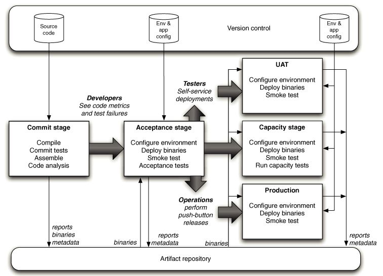
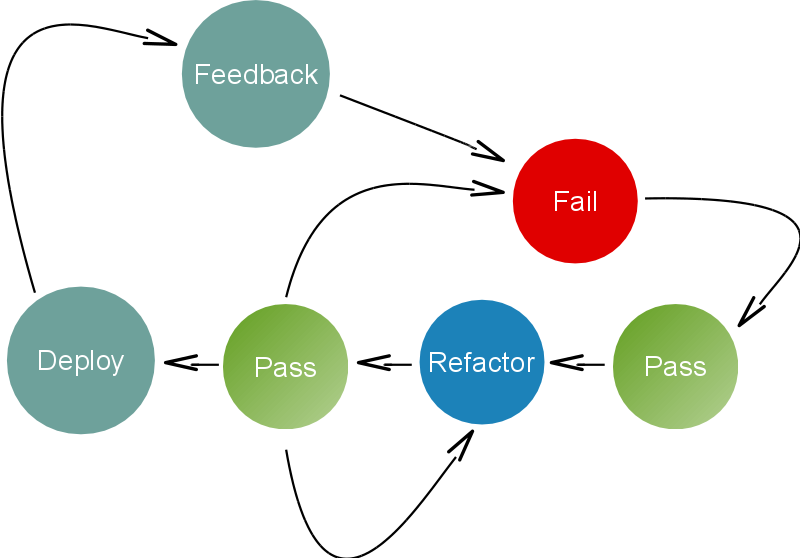

Big Ideas
Small Company
Moderate Heresy
Scaling Continuous Delivery at Unruly
Alex Wilson & Benji Weber | Pipeline 2014
@pr0bablyfine
@benjiweber
Unruly
http://www.unrulymedia.com/
Continuous Delivery and Us
- How we work
- Why it works
- Scaling Infrastructure
- Scaling Development
How we work…
eXtreme Programming
Feedback Loops
- Pairing
- TDD
- Customer
- Deploy
Iterations & Release Planning
"Plan releases once a quarter. Plan iterations more frequently"
(XP Explained)
We do none of these things
Goal
Deliver value as quickly as possible
Minimise time from conception to value
Value Stream

Accelerated Value Stream

Normal Value Stream

Definition of done
When tests pass
When integrated
When deployable build
When deployed
When measurably delivering value
Deploy Pipeline
Waterfall in a Tube

Gate Metaphor
Shorten Pipeline

Automate all the Things
- Acceptance
- Integration
- Component/Unit
- Performance
- …
Move tests post deploy
- Monitoring
- What & Why broken
- Fix rapidly
- NagDD
TDD-D
Synchronous
- Deploy & Feedback
- Inform next change
- Motivation to keep deploy fast
Consequence
No CI Server
Promotion
Business Dev decides when to deploy
- Feature Toggles
UAT in Production
- Global Org
- Production-like data
- Production-like infra
- Performance feedback early
Accessible Customer
Essential
Continuous Delivery Deployment
Every build is capable of being deployed
Every push is deployed
- Simplifying
- Non-event
- After beer o'clock
Branching
- No long lived feature branches
- No pushed branches
- Real CI
- Integrate with users and data
Roll Back Forward
Questions so far?
Infrastructure As Code
- TDD
- Pairing
- Tight feedback loop
Making snowflakes disposable
More frequent machine death during growth
Forced automation
Any project's first step - deploy "Hello World"
Continuous Disposal
Caught out by assuming servers were rebuildable - they weren't
TDD (sort of)
Unit-testing less useful
Acceptance testing much more informative
Gating Infra
Instances declared as test - ignored by monitors/measures
Same people, different pipeline
Cross-team/Shared Infrastructure
Everyone assumed everyone else cared; everyone suffered
Teams needed to collaborate on cross-team infra issues
Reduce Variance, Increase Mean
Homogenous systems are easier to reason about.
MTBF becomes less important than MTTR
As Above, So Below
Managing shared workstations is harder - conflict of interests
Scaling Products/Teams
Break up teams - use Conway's Law to advantage
Project boundaries (easy)
Well-defined APIs (harder)
Split as you need to
Predetermined boundaries = premature optimisation.
Rule 1.
Monolith vs MicroServices
Deploy speed vs Dependency Hell
Deploy Speed & Reliability
1% of tests failing becomes less acceptable
Quarantine and diagnose nondeterministic failures
Shared Ownership vs Freedom
Core Values
Short pipeline
Fast feedback
Early value
We're Hiring
talent@unrulymedia.com